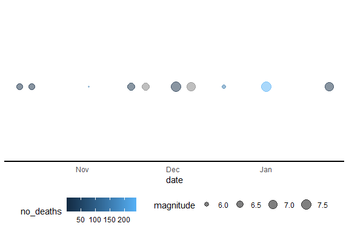
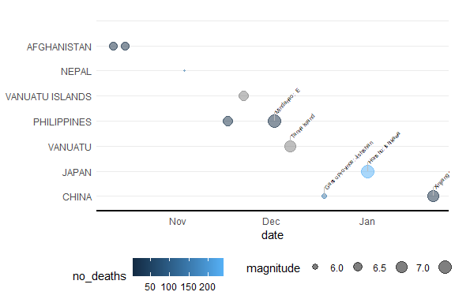

Introduction
This vignette provides an overview of the visualizeNOAA package functionalities for cleaning and visualizing earthquake data from NOAA.
Installation
You can install the package from GitHub using the following command:
#devtools::install_github("apd/visualizeNOAA")Cleaning NOAA Earthquake Data
The eq_clean_data() function cleans the raw NOAA earthquake data. It reads the data from a tab-delimited file, creates a date column, and converts latitude and longitude to numeric class.
cleaned_data <- eq_clean_data("inst/extdata/earthquakes.tsv")
cleaned_data %>%
head()
#> # A tibble: 6 × 6
#> date latitude longitude Location.Name magnitude no_deaths
#> <date> <dbl> <dbl> <chr> <dbl> <dbl>
#> 1 0480-09-29 37.9 23.5 GREECE: SARONIC GULF NA NA
#> 2 0186-02-22 33.8 106. CHINA: GANSU PROVINCE 7 760
#> 3 0070-06-01 36.3 119 CHINA: SHANDONG PROVINCE 7 6000
#> 4 0047-04-17 34.9 105. CHINA: GANSU PROVINCE: LONGXI NA NA
#> 5 0031-09-02 32 35.5 ISRAEL: QUMRAN,ARIHA (JERICHO) 7 NA
#> 6 0037-04-09 36.1 36.1 TURKEY: ANTAKYA (ANTIOCH) NA NACleaning Earthquake Location Names
The eq_location_clean() function cleans the LOCATION_NAME column by stripping out the country name and converting names to title case.
cleaned_location <- eq_location_clean(cleaned_data)
cleaned_location %>%
head()
#> # A tibble: 6 × 8
#> date latitude longitude Location.Name country location magnitude no_deaths
#> <date> <dbl> <dbl> <chr> <chr> <chr> <dbl> <dbl>
#> 1 2024-01-22 41.3 78.6 CHINA: XINJIANG PROVINCE; KAZAKHSTAN CHINA Xinjiang Province; K… 7 3
#> 2 2024-01-01 37.5 137. JAPAN: HONSHU: ISHIKAWA JAPAN Honshu: Ishikawa 7.5 241
#> 3 2023-12-18 35.7 103. CHINA: GANSU PROVINCE: JISHISHAN CHINA Gansu Province: Jishi… 5.9 151
#> 4 2023-12-07 -20.7 169. VANUATU: TANNA ISLAND VANUATU Tanna Island 7.1 NA
#> 5 2023-12-02 8.53 126. PHILIPPINES: MINDANAO: E PHILIPPINES Mindanao: E 7.6 3
#> 6 2023-11-22 -15.0 168. VANUATU ISLANDS: MAEWO VANUATU ISLANDS Maewo 6.7 NAVisualizing Earthquake Data
Timeline of Earthquakes
The geom_timeline() function plots a timeline of earthquakes.
df_visualize <- bind_rows(
cleaned_location %>%
head(10),
data.frame(country="", location ="")) %>%
mutate(country=factor(country, levels = unique(country)))
ggplot(data = df_visualize) +
geom_timeline(aes(date,size = magnitude, color = no_deaths)) +
theme_minimal() +
theme(
axis.line.x = element_line(linewidth = 0.75),
axis.title.y = element_blank(),
panel.grid.major.x = element_blank(),
panel.grid.minor.x = element_blank(),
legend.position = "bottom"
)
#> Warning: Removed 1 rows containing missing values (`geom_timeline()`).
Timeline of Earthquakes
The geom_timelinelabel() function includes label as well.
ggplot(data = df_visualize) +
geom_timeline(aes(date,size = magnitude, color = no_deaths)) +
geom_timelinelabel(aes(date,label = location), n_max = 5) +
theme_minimal() +
theme(
axis.line.x = element_line(linewidth = 0.75),
axis.title.y = element_blank(),
panel.grid.major.x = element_blank(),
panel.grid.minor.x = element_blank(),
legend.position = "bottom"
)
#> Warning: Removed 1 rows containing missing values (`geom_timeline()`).
#> Warning: Removed 1 rows containing missing values (`geom_timeline_label()`).
ggplot(data = df_visualize) +
geom_timeline(aes(date,country, size = magnitude, color = no_deaths)) +
geom_timelinelabel(aes(date,country,label = location), n_max = 5) +
theme_minimal() +
theme(
axis.line.x = element_line(linewidth = 0.75),
axis.title.y = element_blank(),
panel.grid.major.x = element_blank(),
panel.grid.minor.x = element_blank(),
legend.position = "bottom"
)
#> Warning: Removed 1 rows containing missing values (`geom_timeline()`).
#> Warning: Removed 1 rows containing missing values (`geom_timeline_label()`).
Visualize Earthquakes in Mexico Since 2000
This function filters the cleaned earthquake data to include only earthquakes in Mexico since the year 2000 and visualizes them on a leaflet map. Each earthquake is represented by a circle on the map, with the circle’s radius proportional to the earthquake’s magnitude. The pop-up for each circle displays the date of the earthquake.
Visualize Earthquakes in Mexico Since 2000 with Custom Annotations
This function filters the cleaned earthquake data to include only earthquakes in Mexico since the year 2000. It then creates custom annotations for each earthquake, including information about the location, magnitude, and total deaths. These annotations are added to the leaflet map, providing more detailed information when a user interacts with the map.